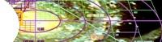
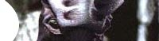
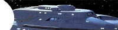
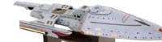

|
Acervo
Errando
a cada ano-luz
 Saiba
aqui por que as distncias no
podem ser levadas a srio em Voyager.
Sr.
Paris, trace um curso para casa
Leia aqui
um apanhado geral do primeiro ano e o que esperar do pacote de
DVD.
O
melhor de Voyager ainda est por vir?
As
expectativas dos fs com relao ao quarto ano se justificam?
Descubra aqui.
Enquanto
isso, nos decks inferiores...
Saiba
mais sobre os tripulantes menos "famosos" da Voyager
clicando aqui.
A
volta da grande aventura
 Uma
anlise geral da terceira temporada da srie, voc encontra clicando aqui.
A
Voyager que no decolou, Parte II
 Leia aqui
a sequncia da histria do design da USS Voyager para a srie.
A
Voyager que no decolou, Parte I
 Conhea
o primeiro modelo da Voyager criado por Rick Sternbach, clicando aqui.
A
maior jia na coroa de Voyager
Aprenda
mais sobre o carismtico Doutor hologrfico clicando aqui.
Janeway
vs. Primeira Diretriz, Final
A
concluso da saga da capito de Voyager pelo quadrante Delta, aqui.
Janeway
vs. Primeira Diretriz, parte VI
Confira
como a capit lidou com os dilemas do incio do stimo ano aqui.
Janeway
vs. Primeira Diretriz, parte V
A
capit rebolou um bocado para manter a lei na sexta temporada;
veja aqui.
Janeway
vs. Primeira Diretriz, parte IV
A
presena de Seven of Nine e dos Borgs marcou a atuao da
capit; leia mais aqui.
Janeway
vs. Primeira Diretriz, parte III
A
introduo dos piores inimigos da Voyager mudou tudo; confira aqui.
Janeway
vs. Primeira Diretriz, parte II
Confira
a atuao da capit para manter a ordem nos anos 2 e 3,
clicando aqui.
Janeway
vs. Primeira Diretriz, parte I
Saiba
como a capit Janeway era rgida com os protocolos no primeiro
ano, aqui.
Os
efeitos especiais de Voyager
A
srie revolucionou a produo de Jornada com o uso de
CGI; leia mais aqui.
Borgs
a bordo, Parte II
Veja
o impacto que os Borgs tiveram nas ltimas temporadas da srie, aqui.
Borgs
a bordo, Parte I
A
introduo dos Borgs simplesmente mudou a cara da srie; leia aqui.
Para
os ntimos, Kathryn
Leia
um perfil da capit da USS Voyager, Kathryn Janeway, clicando aqui.
Relacionamentos
pessoais em Voyager
Saiba
como a srie abordou este tema em seus primeiros seis anos
clicando aqui.
Um
estranho entre ns
Nosso
colunista comenta a chegada da srie ao Brasil; leia mais aqui.
|